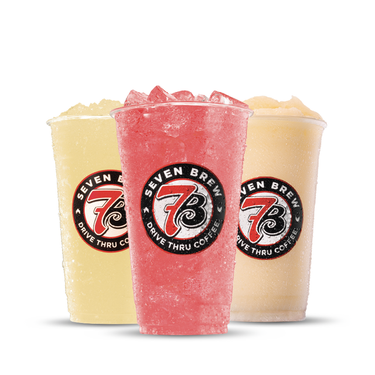
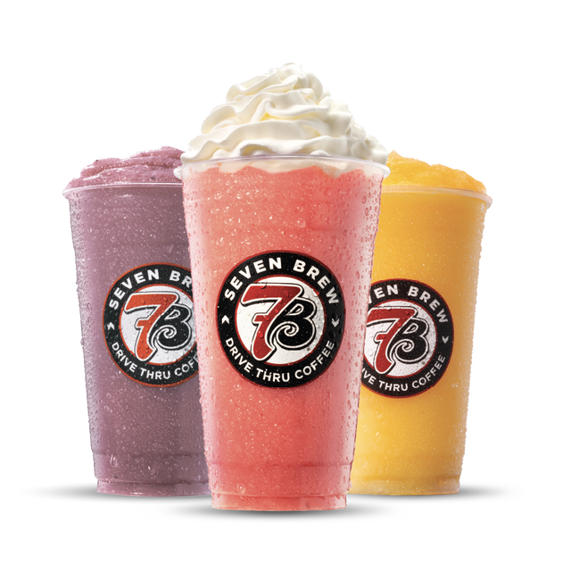

Every caffeine-free option on the 7 Brew menu — sourced directly from our own drink database — plus how to order the viral Pup Cup for your dog.
We cross-checked every drink in our own menu database and found 27 items with zero caffeine — spanning lemonades, Italian sodas, shakes and smoothies. None of these use an espresso or 7 Energy base.
Every item below is listed at 0 mg of caffeine across small, medium and large in our menu database. None contain espresso or the 7 Energy base.
| Drink | Category |
|---|---|
| Pumpkin Roll Shake | seasonal |
| Lemon Drop 7 Fizz | 7 Fizz Sodas |
| Pink Mermaid 7 Fizz | 7 Fizz Sodas |
| Brew Lagoon 7 Fizz | 7 Fizz Sodas |
| Blood Orange 7 Fizz | 7 Fizz Sodas |
| Peaches 'n' Cream 7 Fizz | 7 Fizz Sodas |
| Pink Paradise Lemonade | Lemonades |
| Tropic Thunder Lemonade | Lemonades |
| Blackberry Cobbler Lemonade | Lemonades |
| Fresh Lemonade | Lemonades |
| Vanilla Shake | Shakes & Treats |
| Chocolate Shake | Shakes & Treats |
| Strawberry Shake | Shakes & Treats |
| Salted Caramel Shake | Shakes & Treats |
| Cookies & Cream Shake | Shakes & Treats |
| Cookie Butter Shake | Shakes & Treats |
| Birthday Cake Shake | Shakes & Treats |
| Orange Sherbet Shake | Shakes & Treats |
| Rocky Road Shake | Shakes & Treats |
| Bakery Muffin Tops | Secret Menu |
| 7 Brew Pup Cup | Secret Menu |
| Strawberry Fruit Smoothie | Smoothies |
| Mango Fruit Smoothie | Smoothies |
| Piña Colada Smoothie | Smoothies |
| Peach Fruit Smoothie | Smoothies |
| Wildberry Fruit Smoothie | Smoothies |
| Blueberry Fruit Smoothie | Smoothies |

The 7 Brew lemonade menu and Fizz Italian soda menu are both built on a caffeine-free base (real lemonade or soda water) with flavored syrup, making them the easiest caffeine-free options to customize for a child's taste — from fruity Blackberry Cobbler Lemonade to fizzy Peaches 'n' Cream.

7 Brew's shakes and smoothies line is entirely caffeine-free and tends to be the most popular category for younger kids, from classic Vanilla and Chocolate Shakes to fruit-based Mango and Wildberry Smoothies.
The Pup Cup — a small cup of whipped cream, sometimes with a dog treat on top — has become a viral drive-thru tradition across the coffee industry, and 7 Brew stands are known to offer them. It isn't a printed menu item, so just ask your brewista for a Pup Cup for your dog when you order; availability and exact preparation can vary by stand.
7 Brew doesn't publish a separate printed kids' menu, but it offers 27 caffeine-free drinks across its lemonade, fizz soda, shake and smoothie categories that work well for children — plus a free Pup Cup for dogs.
A Pup Cup is a small cup of whipped cream (sometimes with a dog treat) that many drive-thru coffee chains, including 7 Brew, will make for your dog on request. It is a customer-driven tradition rather than a printed menu item, so ask your brewista when you order.
Yes. 7 Brew's lemonade lineup, including Fresh Lemonade, Blackberry Cobbler Lemonade, Tropic Thunder Lemonade and Pink Paradise Lemonade, contains no caffeine.
Yes, the 7 Fizz Italian soda line (including Blood Orange, Brew Lagoon, Pink Mermaid Fizz and Peaches 'n' Cream) is caffeine-free — it's a soda-water base with flavored syrup, not an espresso or energy drink base.
Yes, the full shake lineup (Vanilla, Chocolate, Strawberry, Salted Caramel, Cookies & Cream, Cookie Butter, Birthday Cake, Orange Sherbet, Rocky Road) and fruit smoothie lineup (Strawberry, Mango, Piña Colada, Peach, Wildberry, Blueberry) contain no caffeine and no espresso.
The same small, medium and large sizing used across the menu applies to lemonades, fizz sodas, shakes and smoothies — a small is usually the easiest starting point for a young child.
Ask for half sweet when ordering any lemonade or fizz soda — brewistas can typically reduce the syrup pumps per size. See our full customization guide for exact phrasing.
Shakes are the main dairy-based, caffeine-free option. If your child wants something closer to a "kids' latte," ask your stand whether a steamed milk drink without espresso can be made — availability varies by location.